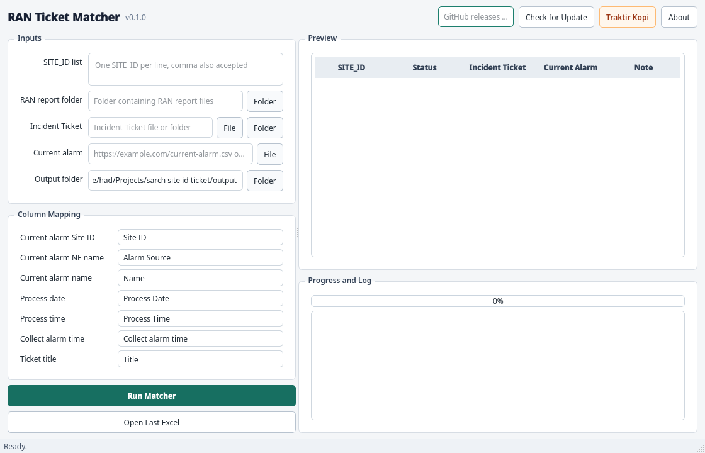
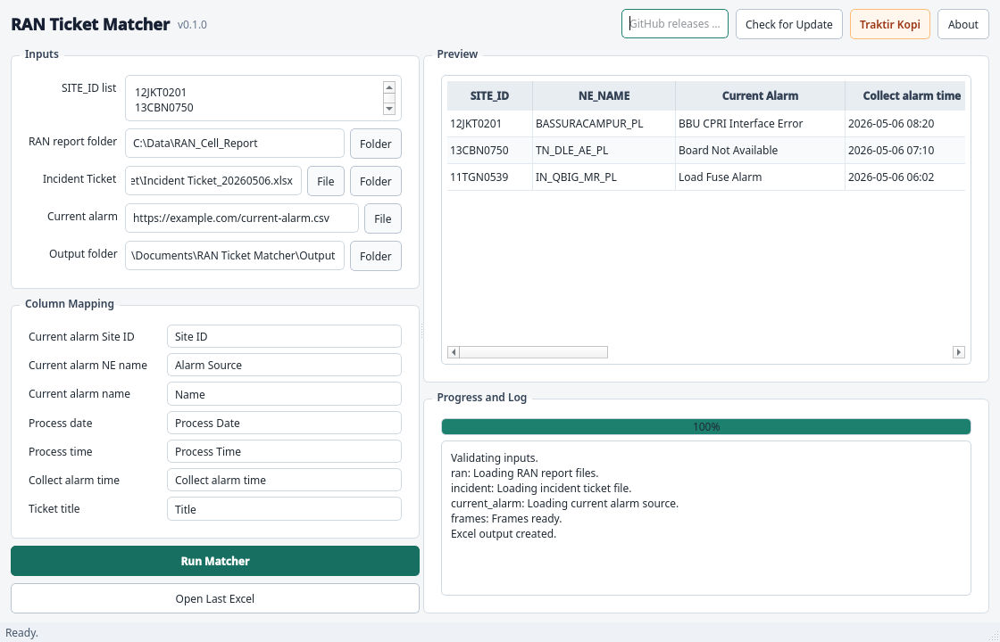

RAN Ticket Matcher
Panduan ringkas untuk mengecek Site ID, current alarm, dan incident ticket dalam satu file Excel.
Untuk Apa
Membantu tim melihat apakah alarm aktif pada sebuah Site ID sudah memiliki ticket yang sesuai.
Output Utama
File Excel berisi daftar NE, ticket, current alarm, dan pengecekan current alarm terhadap ticket.
Developer: hadifauzanhanif@gmail.com
Dukungan apresiasi: https://saweria.co/HDfauzan
1. Gambaran Singkat
RAN Ticket Matcher digunakan saat pengguna memiliki daftar Site ID dan ingin mengetahui status ticket yang berkaitan dengan alarm aktif. Aplikasi membaca tiga sumber data: RAN report, Incident Ticket, dan Current Alarm.
Data yang Dibaca
- Daftar Site ID yang ingin dicek.
- Folder RAN report berisi LTE, NR, atau GSM cell report.
- File atau folder Incident Ticket.
- CSV/XLSX Current Alarm dari URL atau file lokal.
Yang Dihasilkan
- NE kandidat dari setiap Site ID.
- Ticket yang cocok dengan NE tersebut.
- Current alarm yang sedang aktif.
- Daftar current alarm yang sudah atau belum punya ticket.

2. Persiapan Data
Sebelum menjalankan aplikasi, siapkan file input di folder yang mudah ditemukan. Jangan ubah struktur data produksi jika tidak diminta oleh admin aplikasi.
| Data | Isi | Catatan |
|---|---|---|
| Site ID | Daftar Site ID yang ingin dicek. | Bisa ditempel satu per baris atau dipisah koma. |
| RAN report | LTE/NR/GSM cell report. | Aplikasi membaca semua file report dalam folder. |
| Incident Ticket | File Excel ticket terbaru. | Gunakan export terbaru agar hasil tidak tertinggal. |
| Current Alarm | CSV/XLSX dari URL atau file lokal. | URL produksi tidak perlu disimpan di dokumen publik. |
Perhatian
Jika satu Site ID memiliki lebih dari satu NE Name, aplikasi tetap menyimpan semua NE tersebut. Ini penting karena ticket bisa muncul pada NE yang berbeda walaupun Site ID-nya sama.
3. Cara Menjalankan Pengecekan
- Masukkan daftar Site ID pada kolom SITE_ID list.
- Pilih folder RAN report folder.
- Pilih file atau folder Incident Ticket.
- Masukkan URL CSV atau pilih file lokal untuk Current alarm.
- Cek mapping kolom. Default umumnya: Site ID, Alarm Source, Name, Process Date, dan Process Time.
- Klik Run Matcher dan tunggu hingga progress selesai.

4. Membaca Hasil Excel
Setelah proses selesai, aplikasi membuat file Excel pada folder output. Tombol Open Last Excel bisa dipakai untuk membuka hasil terakhir.
| Sheet | Fungsi |
|---|---|
| Input_SITE_ID | Daftar Site ID yang diproses. |
| NE_Candidates | Semua pasangan Site ID, RAT, dan NE Name yang ditemukan dari RAN report. |
| Output | Ticket yang cocok dengan NE kandidat. |
| Current Alarm | Daftar alarm aktif dari sumber current alarm. |
| Current Alarm Ticket Check | Daftar current alarm dan status apakah sudah memiliki ticket yang mirip. |

5. Sheet Current Alarm Ticket Check
Sheet ini dipakai untuk melihat apakah current alarm sudah punya ticket. Jika ticket belum ditemukan, kolom ticket akan kosong, tetapi Site ID, NE Name, current alarm, dan waktu alarm tetap tampil.
| Kolom | Arti |
|---|---|
| SITE_ID | Site ID yang sedang dicek. |
| NE_NAME | Jika ticket ada, diambil dari ticket match. Jika ticket tidak ada, diambil dari kolom Alarm Source pada current alarm. |
| Current Alarm | Alarm aktif dari data current alarm. |
| Collect alarm time | Gabungan Process Date dan Process Time, atau kolom waktu gabungan jika tersedia. |
| Ticket ID | Nomor ticket jika ditemukan. |
| TYPE dan ALARM | Jenis dan nama alarm dari title ticket. |
| Ticket Status | Status ticket saat data diproses. |
| Created/Updated At | Waktu ticket dibuat dan terakhir diperbarui. |
6. Cara Mengambil Keputusan
Ada current alarm dan ada ticket
Periksa apakah ticket menangani alarm yang sama. Jika status ticket masih berjalan, lanjutkan monitor sesuai prosedur.
Ada current alarm tetapi ticket kosong
Baris ini perlu ditindaklanjuti. Buat ticket baru atau eskalasi sesuai aturan operasional.
Ada ticket tetapi current alarm kosong
Cek apakah alarm sudah clear atau data current alarm belum terbaru.
Banyak NE untuk satu Site ID
Validasi NE yang benar sebelum mengambil keputusan, terutama untuk site yang memiliki beberapa NE LTE.
7. Checklist Harian
- Gunakan file Incident Ticket dan Current Alarm terbaru.
- Pastikan daftar Site ID tidak salah ketik.
- Cek sheet Current Alarm Ticket Check untuk baris tanpa Ticket ID.
- Cek ticket yang statusnya tertutup tetapi current alarm masih aktif.
- Simpan hasil dengan nama yang memuat tanggal atau jam proses.